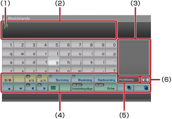
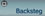
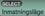
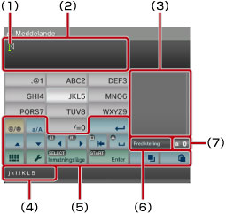
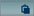

Om XMB™-menyn > Använda tangentbordet
Använda tangentbordet
Tangentbordet visas automatiskt så fort en inmatning av text behövs. Dessa instruktioner förutsätter att ett engelskt tangentbord används. Information om hur man använder tangentbord på andra språk finns i användarhandboken för respektive språk.

(1) |
Markör |
|---|---|
(2) |
Fält för textinmatning |
(3) |
Visar förutsägande alternativ |
(4) |
Funktionstangenter |
(5) |
Visas när det förutsägande läget är aktiverat |
(6) |
Visning av inmatningsläge |
Tangentlista
Vilka tangenter som visas varierar mellan olika inmatningslägen och andra villkor.
 |
Infogar en symbol eller smiley |
|---|---|
 / /  |
Växlar vilken typ av tecken som ska anges |
| Flyttar markören | |
 |
Raderar tecknet till vänster om markören |
| Infogar ett blanksteg | |
| Infogar en radbrytning | |
 / /  |
Kopierar eller klistrar in text |
 |
Växlar till miniatyrtangentbordet |
 |
Växlar inmatningsläget |
 |
Bekräftar tecken som matats in men inte godkänts/Avslutar tangentbordet |
Inmatning av tecken
Med hjälp av det förutsägande läget kan man ange de första få bokstäverna av ett ord, så får man upp en lista med de vanligaste orden som börjar med just dessa bokstäver. Du kan därefter använda riktningsknapparna för att välja det ord du skriva in. När du är klar med inmatningen av text väljer du tangenten "Enter" för att avsluta tangentbordet.
Tips!
- Eventuellt kan smileys inte användas i vissa utdatalägen.
- De språk du kan använda för textinmatningen är de språk som systemet har stöd för. Om systemspråket exempelvis är inställt på franska, kan du ange text på franska. Systemspråket kan du ställa in vid
 (Inställningar) >
(Inställningar) >  (Systeminställningar) > [Systemspråk].
(Systeminställningar) > [Systemspråk]. - Du kan rensa hela textfältet genom att trycka på knapparna
 + L1 samtidigt.
+ L1 samtidigt.
Använda en anslutet tangentbord
Du kan mata in text med ett USB-tangentbord eller ett Bluetooth®-tangentbord (båda säljs separat). Om en tangent på det anslutna tangentbordet trycks ned medan skärmbilden för inmatning av text visas, kommer denna skärmbild att ge dig möjlighet att använda det anslutna tangentbordet.
Tips!
- För information om hur man kopplar ett Bluetooth®-tangentbord, se (Inställningar) >
 (Tillbehörsinställningar) > [Hantera Bluetooth®-enheter] i denna guide.
(Tillbehörsinställningar) > [Hantera Bluetooth®-enheter] i denna guide. - Du kan inte använda det förutsägande läget när ett anslutet tangentbord används.
- Du kan ange en radbrytning i textfältet genom att trycka på ALT + ENTER. Du kan bara ange en radbrytning när den är tillgänglig, t.ex. när du skriver ett meddelande under kategorin
 (Vänner).
(Vänner). - Du kan rensa hela textfältet genom att trycka på knapparna SHIFT + BACKSTEG samtidigt.
- Du kan klistra in text som har kopierats genom att trycka på Ctrl + V. Den text som senast kopierades klistras in.
Använda miniatyrtangentbordet
Om du väljer på det normalstora tangentbordet växlar det över till miniatyrtangentbordet. På minitangentbordet har varje tangent tilldelats flera tecken.

(1) |
Markör |
|---|---|
(2) |
Fält för textinmatning |
(3) |
Visar förutsägande alternativ |
(4) |
Visar tecken som kan matas in med den aktuella tangenten. |
(5) |
Funktionstangenter |
(6) |
Visas när det förutsägande läget är aktiverat |
(7) |
Visning av inmatningsläge |
 ändras det tecken som kan matas in. För att exempelvis mata in ett [L] väljer du och trycker på knappen
ändras det tecken som kan matas in. För att exempelvis mata in ett [L] väljer du och trycker på knappen  för att flytta markören så att den är placerad efter [L]. Välj därefter och tryck på knappen
för att flytta markören så att den är placerad efter [L]. Välj därefter och tryck på knappen Tips!
Du kan också använda metoden för inmatning av text med ett enda tryck. Använd tangenten "Alternativ" för att växla metod för inmatning av text. När man använder metoden för ett enda tryck, visas ord som kan formas med hjälp av kombinationer som skapats utifrån en enda bokstav (eller siffra) på respektive valda tangent, som förutsagda textalternativ. Om du till exempel väljer tangenten "DEF3", ställs ord som börjar på d, e, f eller 3 upp i listan i fönstret med de olika förutsagda alternativen, på höger sida om skärmtangentbordet. Om symbolen ">" visas fortsätter du ange bokstäver tills förutsagda alternativ visas.
Tangentlista
Vilka tangenter som visas varierar mellan olika inmatningslägen och andra villkor.
 |
Infogar en symbol |
|---|---|
 |
Växlar mellan versaler och gemener |
 |
Infogar en radbrytning |
| Flyttar markören | |
 |
Raderar tecknet till vänster om markören |
 |
Infogar ett blanksteg |
 / /  |
Kopierar eller klistrar in text |
 |
Växlar till det normalstora tangentbordet |
 |
Visar alternativmenyn |
| Växlar inmatningsläget | |
 |
Bekräftar tecken som matats in men inte godkänts/Avslutar tangentbordet |